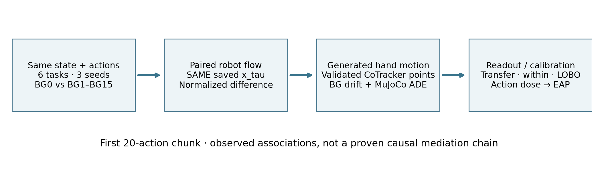

Background Perturbation Sensitivity of Action-Conditioned Flow
New · Flow → Trajectory / Re-probing / EAP
Task Seed 0 1 2 Background Denoising point RMS future scope 전체 L1–L5 L1 · frames 1–4 L2 · frames 5–8 L3 · frames 9–12 L4 · frames 13–16 L5 · frames 17–20
1 · Input → Flow velocity
Goal 같은 action·물리 상태·noise에서 배경만 바꾸면 로봇 영역 flow가 달라지는가?
v_b(τ) = v_θ(x_τ, τ, I_b, A) · A / x_τ / τ 고정
색상 슬롯 = 분석에 사용한 agentview 미래 L1–L5 · 회색 = 분석 제외. Flow는 latent를 바꾸는 방향이며 물리적 로봇 속도가 아닙니다. A2World는 20개 action으로 이루어진 한 chunk마다 미래 20프레임에 대응하는 latent 5개(L1–L5)를 매 denoising step에서 함께 갱신하여 생성합니다.
INPUT MASK · Simulator의 frame별 robot segmentation → 8×8 공간·4프레임 coverage → ≥0.5 선택. 그림은 L1 예시이며 L1–L5 각각 별도 mask를 사용합니다. 4프레임 구간은 mask 정렬 기준입니다. Tokenizer·모델의 시간 혼합과 GT mask 밖으로 움직인 생성 로봇의 영향은 남을 수 있습니다. 상세 구현
2 · Flow → 두 가지 계산
Goal 배경에 따른 flow 변화와 action 복원 성능을 구분합니다.
RMS 경로 · 차이를 먼저 계산 → 시점별 robot 영역 선택 → 제곱 평균의 제곱근. Probe 경로 · 공간만 평균 → 시간 순서 유지 → 20-step action 복원. 시간 평균은 하지 않습니다.
배경 RMS ÷ action RMS → Ratio 예측 Â ↔ 실제 A → test R²
같은 두 계산을 denoising τ별로 반복합니다. RMS 계산 상세 · 저장 차원·보조 지표
3 · Robot / Full Flow Difference 3A · Before normalization — Raw flow Goal Compare robot-region and full-flow velocity while changing only the background.
D_bg_robot(τ,b) = RMS_selected[M_robot ⊙ (v_b(τ) − v_ref(τ))]
Input BG0 / selected background · shared x_τ, A, τ. Output Robot / full RMS and heatmaps.
BG0 ORIGINAL
Output · Robot / full comparison
Robot과 All space는 같은 agentview 미래 구간을 비교합니다. Full raw tensor는 두 카메라·conditioning 포함 12슬롯 전체입니다. Conditioning은 sampler에서 고정되므로 이 raw 출력 비교는 보조 지표입니다. 배경 자체가 달라서 전체 flow가 달라지는 것은 정상일 수 있습니다.
Output · Unmasked agentview L1–L5
두 heatmap 모두 각 위치의 16채널 차이 RMS이며 시간 평균은 없습니다. Robot heatmap의 회색은 mask 밖, Unmasked heatmap은 모든 공간 위치입니다. 같은 task·seed·τ에서 모든 배경과 L1–L5가 같은 색상 범위를 사용합니다.
상단 RMS future scope는 곡선의 시점을 선택합니다. Heatmap과 아래 표는 항상 L1–L5를 모두 표시합니다.
3B · Before / After normalization — Robot flow
Goal 초기 flow 차이가 큰 것은 전체 flow 크기 때문인가, 상대적인 배경 민감도도 큰가?
D_raw = RMS_robot(v_b − v_ref)
Input 동일 x_τ·action의 저장된 flow 쌍 + 동일 robot mask · 상단 Task / Seed / future scope와 연동.
Output Raw RMS / 정규화 차이 / CosSim · 배경별 실선 + 평균 점선. 전체 CSV · 평균 CSV
Mean All backgrounds · BG0–BG15 Perturbed backgrounds · BG1–BG15
4 · Denoising-Time Analysis Goal Where does background-induced robot-flow divergence appear?
D_bg_robot(τ,b)
Input Entire 35-step schedule, 10 selected points. Output One curve per existing background; dashed mean.
이 섹션은 각 denoising 시점의 개별 RMS이며 누적값이 아닙니다. 가로축은 denoising 진행도, heatmap의 세로축은 미래 L1–L5입니다.
Early / high-noise stage · Middle · Late / low-noise stage
5 · Cumulative Flow Difference
Goal 후반의 순간 차이가 작아져도, 앞선 flow 차이가 누적되어 있는가?
Δv_i = v_BGᵦ(x_τᵢ, τᵢ) − v_BG0(x_τᵢ, τᵢ) · w_i = τᵢ₋₁ − τᵢ > 0
Input 공통 BG0 경로의 동일 x_τ에서 얻은 10개 flow 쌍 + 실제 τ 간격. Output RMS 크기의 누적 C_mag / 벡터 누적 후 RMS C_vec.
Region Robot · agentview future All space · agentview future Full raw tensor · 12 slots
C_mag · 차이의 크기를 더하므로 감소하지 않습니다. 후반 순간 RMS가 작아져도 앞서 쌓인 값은 남습니다.
C_vec · 차이 벡터를 먼저 더합니다. 방향이 반대인 성분은 상쇄되어 감소할 수 있습니다.
저장된 10개 시점의 사다리꼴 근사 적분입니다. 35개 scheduler 업데이트 전체를 재현한 값이나, 각 배경이 독립 생성한 최종 latent·영상의 차이가 아닙니다. 적분 범위: 측정된 τ≈0.995→0.0099. 정의·해석 · CSV
6 · Flow Action Probe Goal How recoverable is the conditioning action from robot-related flow?
r_τ = vec(MaskedSpatialMean(v_τ, M_robot))
Input Temporal flow features · probe noise seed 0 · trajectory-disjoint train/validation/test. Output Linear / 2-layer MLP R²; original-only training.
입력 구성은 위 B 그림과 같습니다. L1–L5의 순서를 유지하며, R² 곡선은 denoising τ별 결과입니다. RMS future scope 선택과 무관합니다.
Probe Linear 2-layer MLP
7 · Background vs Action Ratio Goal Compare background drift with a small real action change.
D_bg_robot(τ,b) · D_action_robot(τ)
Input Original action / one x-translation change at step 0, ε = 0.05 training-set std. Output Numerator, denominator, ratio.
전체 모드는 5개 시점을 모은 RMS끼리 비교합니다. L 선택 모드는 해당 미래 시점의 배경 RMS와 action RMS로 비율을 계산합니다. 첫 action step만 바꿔도 이후 시점의 flow가 함께 달라질 수 있습니다.
Denominator ≤ 10⁻⁶ → undefined. Inspect ε = 0.02 / 0.10 and x/y/z/rotation controls in saved metrics.
8 · Input / Output Visual Example Goal Compare the same timestep for three controlled inputs.
v_A = v_θ(x_τ,τ,I_original,A) · v_B = v_θ(x_τ,τ,I_b,A) · v_C = v_θ(x_τ,τ,I_original,A_δ)
INPUT A · Original + Action A INPUT B · Background + SAME Action A INPUT C · Original + Action A_δ 각 행은 A/B/C, 각 열은 미래 L1–L5입니다. 각 위치의 16채널 flow magnitude를 표시하며 시간 평균은 하지 않습니다. A/B/C·L1–L5 모두 같은 색상 범위를 사용합니다.
OUTPUT · Robot flow magnitude (channel RMS) at shared τ. Decoded rollout is secondary: existing settled rollout comparison .
REPORT.md · CSV · 시점별 RMS CSV · 시점별 결과 · Verified flow interface
9 · Flow → Trajectory
Goal Robot-flow drift가 클수록 생성 궤적도 달라지는가?
Spearman ρ[D_flow_norm(τ,b), nD_traj_BG(b)]
Input 6 tasks × 3 seeds × BG1–BG15 · 동일 action / 초기 noise · 첫 20-action 구간 · L1–L5 전체 (future scope 선택과 무관).
Output Pooled / task 평균 제거 / task별 상관 · task bootstrap 95% CI · 산점도는 평균 제거 전 좌표. 상관은 인과 증명이 아닙니다.
Result

Correlation Pooled Task 평균 제거 선택 task
10 · Trajectory Visualization
Goal 배경에 따른 궤적 차이와 MuJoCo GT 오차를 구분합니다.
ADE = meanₜ ‖p_gen(t) − p_GT(t)‖₂ · FDE = ‖p_gen(20) − p_GT(20)‖₂
Input MuJoCo 투영 GT / CoTracker의 동일 손 표면 추적점 중심 · 평가 frame 1–20 · 영상 21 RGB frames, 10 FPS (물리 20 Hz).
Output 동기 영상: GT | BG0 | 선택 BG · 초록 GT query, 보라 GT EE 위치, 청록/주황 생성 손 중심.
Result
11 · Cross-Background Re-Probing
Goal BG0 probe의 R² 하락이 표현 변화인가, action 정보 감소인가?
r_τ ∈ ℝ¹⁹² → Probe → vec(A) ∈ ℝ¹⁴⁰
Input 기존 flow 표현·demo split 그대로 · task·τ별 학습 · seed 0 · Linear / 2-layer MLP. 상단 Probe 선택과 연동.
Output 동일 held-out demo의 Action R² · 공간만 pooling, 시간 순서 유지.
Result
Robot-flow drift ↔ LOBO Action R²
Goal 배경으로 인한 flow 변화가 클수록 LOBO 성능도 낮아지는가? LOBO는 평가할 배경 하나를 제외한 나머지 배경으로 학습합니다.
ρ(meanA Dflow,norm (τ,b,A), R²LOBO (τ,b))
Input 동일한 held-out action 16개에서 얻은 평균 robot-flow drift와 Action R² · 6 tasks × BG1–15 = 90점 · seed 0.
Output Spearman ρ · Pearson r · task bootstrap 95% CI. R²는 action 회귀 성능입니다.
비교 범위 Task 평균 제거 전체 pooled 선택한 task
Result Task 평균 제거 후 큰 drift와 낮은 LOBO R²가 연관됩니다. Task를 그대로 합치면 관계가 약해지며, 인과관계는 확인하지 않았습니다.
Paired values CSV · Correlation + CI CSV · Linear PDF · MLP PDF
LOBO R² vs. denoising progress · All backgrounds
Goal Compare LOBO action recoverability across all 16 background conditions.
R²_LOBO(τ, b) · b = BG0–BG15
Input Selected Task and Linear / MLP probe · fixed seed 0 · train on the other 15 backgrounds; test on held-out demos of background b.
Output One line per background · held-out Action R².
Result
12 · Action Calibration
Goal 배경 flow drift는 실제 action을 얼마나 바꾼 효과와 비슷한가?
A′[0:L,j] = A[0:L,j] + sign × ε × std_train(Aⱼ)
Input BG0 고정 · 같은 x_τ · coordinate 하나 · 유효 action 범위 · gripper 제외.
Output 측정 곡선의 첫 교차점 / piecewise-linear interpolation · isotonic은 보조 · 범위 밖은 >max, 반응이 거의 0이면 undefined.
Coordinate x y z rx ry rz
Consecutive actions 1 4 8 20
Result
13 · Joint Summary
Goal Flow · 궤적 · action readout · action calibration을 함께 비교합니다.
Background → flow drift ↔ trajectory drift / GT error / probe R² / EAP
Input 상단 task / seed / denoising 시점 · calibration coordinate / 길이.
Output R²는 seed 0의 test cohort 점수이며 단일 rollout 점수가 아닙니다.
Result REPORT · Joint CSV (x, L=20) · 상관 CSV · EAP CSV